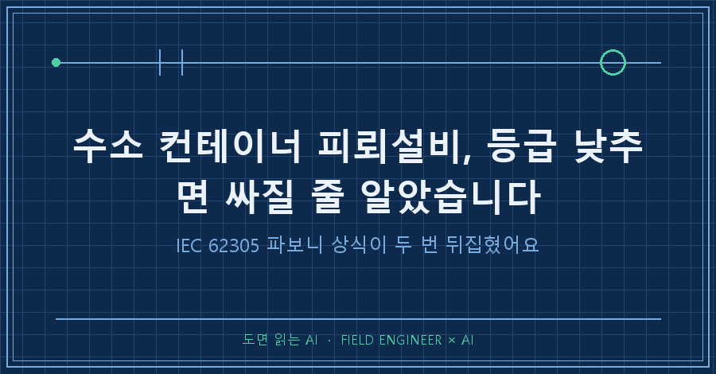
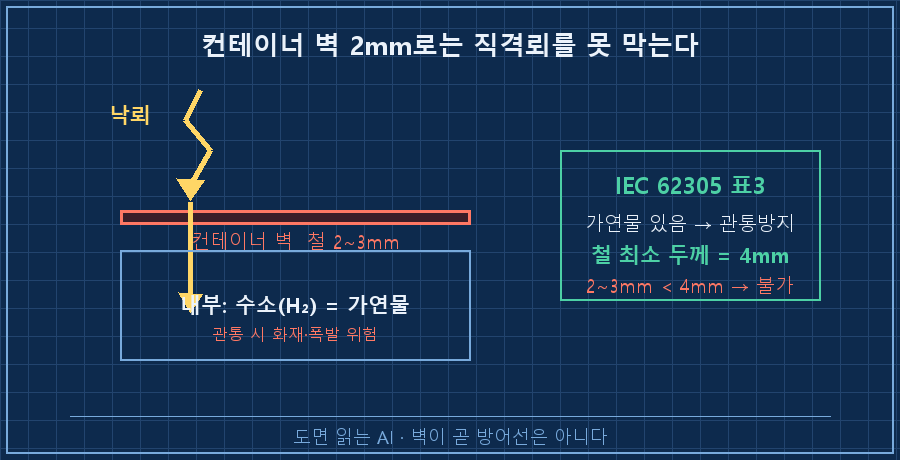
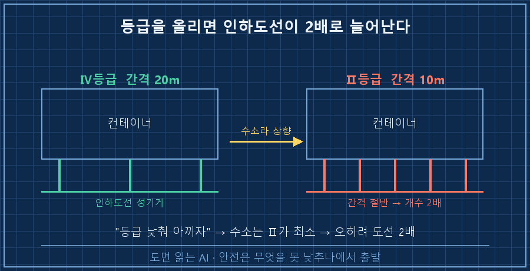
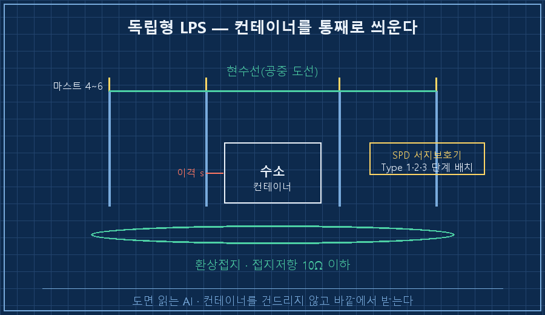

수소 컨테이너에 피뢰설비를 붙이는데, 저는 등급을 낮추면 비용이 싸질 줄 알았습니다.
결론부터 말하면 정반대였어요.
IEC 62305 표준을 AI랑 라인 단위로 파보니, 등급은 못 낮추고 인하도선은 오히려 2배로 늘고, 컨테이너 벽으로는 낙뢰를 아예 못 막는다는 걸 알았거든요.
싸게 하려다 상식이 두 번 뒤집힌 이야기, 오늘 그걸 기록해두려고 합니다.
제 본업은 수소 설비 제어예요.
판넬 설계하고, PLC 로직 짜고, 현장 나가서 결선 확인하고, 인허가에 낼 도면까지 챙기는 게 일이죠.
그중에서도 요즘은 전기·안전 설계를 AI랑 같이 파는 시간이 부쩍 늘었어요.
이 글은 컨테이너 한 동에 피뢰설비를 얹으면서, 제가 15년간 당연하다 여긴 감이 표준 앞에서 깨진 기록이에요.
1. "컨테이너니까 등급 낮춰서 아끼자", 그게 첫 오판이었어요
피뢰설비에는 보호 등급이 있어요.
숫자가 낮을수록(Ⅰ등급) 촘촘하고 비싸고, 높을수록(Ⅳ등급) 느슨하고 쌉니다.
큰 건물도 아니고 컨테이너 한 동이니까, 저는 자연스럽게 생각했어요.
"제일 낮은 등급으로 가면 자재도 덜 들고 싸게 끝나겠지."
그래서 AI한테 IEC 62305 등급표부터 정리시켰어요.
수소를 다루는 시설은 폭발 위험이 있어서, 최소 Ⅱ등급이 기준이더라고요.
Ⅱ등급은 낙뢰의 97%를 잡는 수준이고요.
여기서 첫 단추가 잘못 끼워졌어요.
"컨테이너니까 싸게"가 아니라, "수소니까 함부로 못 낮춘다"가 출발점이었던 거죠.
비용을 먼저 본 게 실수였어요.
| 등급 | 낙뢰 차단 확률 | 회전구체 반경 | 적용 대상 |
|---|---|---|---|
| Ⅰ | 99% | 20m | 최고 위험 |
| Ⅱ | 97% | 30m | 수소·폭발물 시설 |
| Ⅲ | 91% | 45m | 일반 건축물 |
| Ⅳ | 84% | 60m | 저위험 시설 |
2. 반전 하나 — 강판 2mm로는 낙뢰를 못 막아요
등급을 정했으니 다음은 "컨테이너 껍데기를 그냥 피뢰체로 쓰면 되지 않나" 싶었어요.
철판이니까 전기는 잘 통할 테고요.
그런데 IEC 62305에는 금속판을 수뢰부(낙뢰를 직접 받는 부분)로 쓰려면 최소 두께 기준이 있어요.
내부에 가연물이 있어서 낙뢰가 뚫으면 화재·폭발로 이어지는 경우엔, 철은 4mm 이상이어야 해요.
낙뢰가 판을 관통해서 안쪽으로 불꽃이 튀는 걸 막아야 하니까요.
수소 컨테이너 안에는 수소가 있죠. 명백한 가연물이에요.
그런데 일반 컨테이너 벽은 보통 2~3mm 수준이에요.
[수뢰부 활용 판정]
내부 가연물(수소) 있음 → 관통방지 기준 적용
재질 = 철(Fe) → 필요 두께 t = 4mm
실제 컨테이너 벽 = 2~3mm → 4mm 미달
판정: 컨테이너 벽으로 직격뢰 못 막음 → 별도 수뢰부 필요
이 한 줄이 설계를 통째로 바꿨어요.
컨테이너 자체를 피뢰체로 쓸 수 없다는 건, 별도 구조물을 세워서 컨테이너를 통째로 씌워야 한다는 뜻이거든요.
3. 반전 둘 — 등급을 올리면 인하도선이 2배로 늘어요
여기서 두 번째로 감이 깨졌어요.
등급을 못 낮추는 것까진 받아들였는데, "그럼 대체 얼마나 더 드는 거지?" 계산을 해봤죠.
낙뢰를 받은 전류를 땅으로 흘려보내는 게 인하도선인데, 이 도선을 얼마나 촘촘히 세우느냐가 등급마다 달라요.
- Ⅳ등급: 인하도선 간격 최대 20m
- Ⅱ등급: 인하도선 간격 최대 10m
간격이 절반이 된다는 건, 같은 둘레에 도선을 2배로 세운다는 뜻이에요.
"등급을 낮추면 싸진다"는 제 처음 생각을 뒤집으면, "수소라서 등급을 올려야 하니 인하도선이 2배로 든다"가 되는 거죠.

제가 아끼려던 방향과 정확히 반대로, 돈이 더 드는 구조였어요.
안전 기준이 비용보다 먼저라는 걸, 숫자로 두들겨 맞고서야 인정했습니다.
4. 그래서 독립형 LPS로 갔어요
두 반전을 합치면 답은 하나로 모였어요.
컨테이너 벽은 못 믿으니 별도 구조물로 씌우고, 등급은 Ⅱ로 간다.
이걸 독립형(isolated) LPS라고 불러요. 피뢰설비를 보호 대상과 떼어서 독립으로 세우는 방식이에요.
최종 설계는 이렇게 잡혔어요.
- 컨테이너 주변에 마스트(피뢰침 기둥) 4~6개
- 마스트 꼭대기를 잇는 현수선(공중에 건 도선)으로 컨테이너를 그물처럼 덮기
- 컨테이너 금속체와 낙뢰 도선 사이는 이격거리를 둬서 불꽃 튐 방지
- 바닥엔 환상접지(컨테이너를 둘러싸는 고리 접지), 접지저항 10Ω 이하
- 전원·신호선엔 SPD(서지보호기)를 단계별로 배치

핵심은 "컨테이너를 건드리지 않고, 낙뢰 전류를 컨테이너 바깥에서 받아 땅으로 흘린다"예요.
등급을 낮춰 아끼겠다는 처음 그림과는 완전히 다른, 오히려 더 든든한 설계가 됐죠.
5. AI가 준 표준 수치, 그대로 안 믿었어요
여기서 이 블로그가 늘 하는 이야기를 하나 더 붙일게요.
AI가 정리해준 IEC 62305 수치들, 저는 그걸 그대로 도면에 옮기지 않았어요.
AI가 긁어온 수치 상당수는 표준 원문이 아니라 기술 블로그·해설서 같은 2차 자료였거든요.
AI 스스로도 "이건 2차 자료 기반이라 원문 확인이 필요하다"는 딱지를 붙여줬고요.
그래서 등급표·두께 기준·이격거리는 여러 출처를 교차로 대조하고, 마지막엔 인허가 심사기관의 잣대 문서까지 확인하고서야 확정했어요.
실제로 이 설계는 심사기관에 제출해서 적합하다는 확인을 받았습니다.
AI가 없었으면 표준 여러 부(部)를 이만큼 빠르게 훑지 못했을 거예요.
동시에, AI만 믿었으면 2차 자료 수치를 그대로 옮겨 적을 뻔했고요.
빠르게 훑는 건 AI, 최종 근거를 못 박는 건 사람. 이 역할 분담이 저한테는 제일 중요한 규칙이에요.
자주 묻는 질문
Q. 수소 컨테이너는 피뢰 등급을 몇 등급으로 하나요?
수소는 폭발 위험 물질이라 보통 Ⅱ등급을 최소로 봅니다. 낙뢰의 97%를 차단하는 수준이에요. 다만 최종 등급은 IEC 62305-2의 리스크 평가로 결정하는 게 원칙이라, 조건에 따라 더 올라갈 수 있어요.
Q. 컨테이너 철판이 두꺼우면 별도 피뢰침 없이 껍데기로 대신 못 하나요?
내부에 가연물(수소)이 있으면 관통방지 기준이 적용돼서, 철은 4mm 이상이라야 수뢰부로 인정돼요. 일반 컨테이너 벽 2~3mm로는 미달이라 별도 수뢰부가 필요합니다.
Q. 독립형(isolated) 피뢰설비는 언제 쓰나요?
보호 대상 벽·지붕이 직격뢰를 못 견디거나, 내부가 폭발 위험일 때 씁니다. 별도 마스트와 현수선으로 이격해서 낙뢰 전류가 대상에 직접 흐르지 않게 하는 방식이에요.
15년을 해온 일인데도, 비용부터 본 순간 순서가 꼬였어요.
안전 설비는 "얼마 아끼나"가 아니라 "무엇을 못 낮추나"에서 출발해야 한다는 걸, 표준한테 두 번 얻어맞고 다시 배웠습니다.
이런 표준 씨름의 기록은 makefield.ai에 하나씩 모아두고 있어요.
---
현장 엔지니어를 위한 AI 도입·활용 문의: makefield.ai